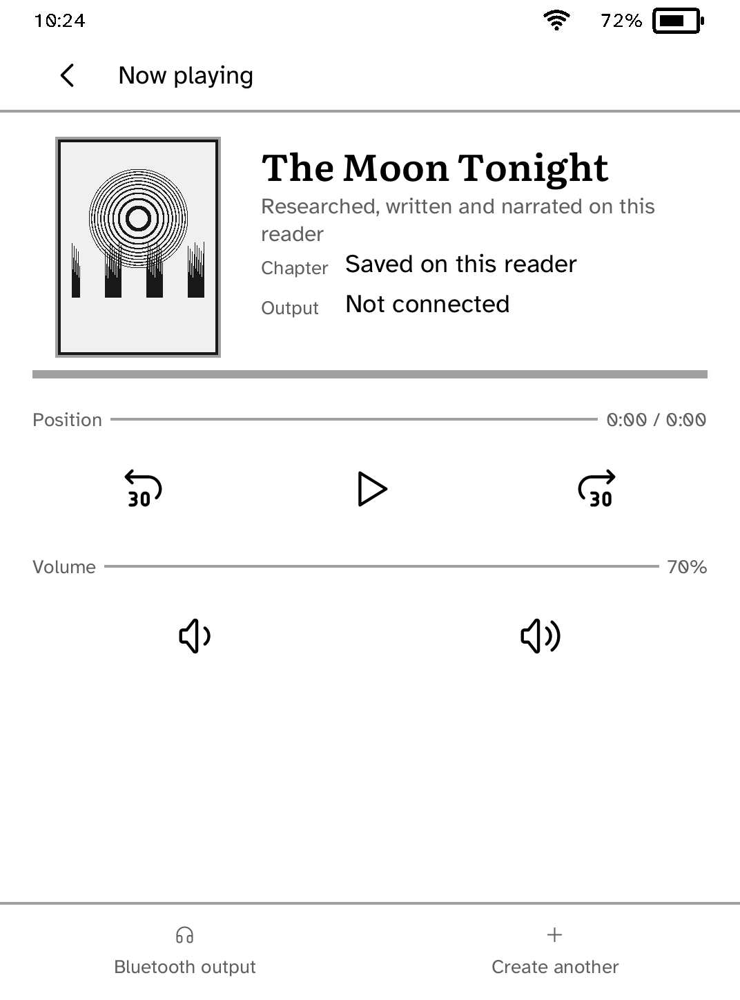
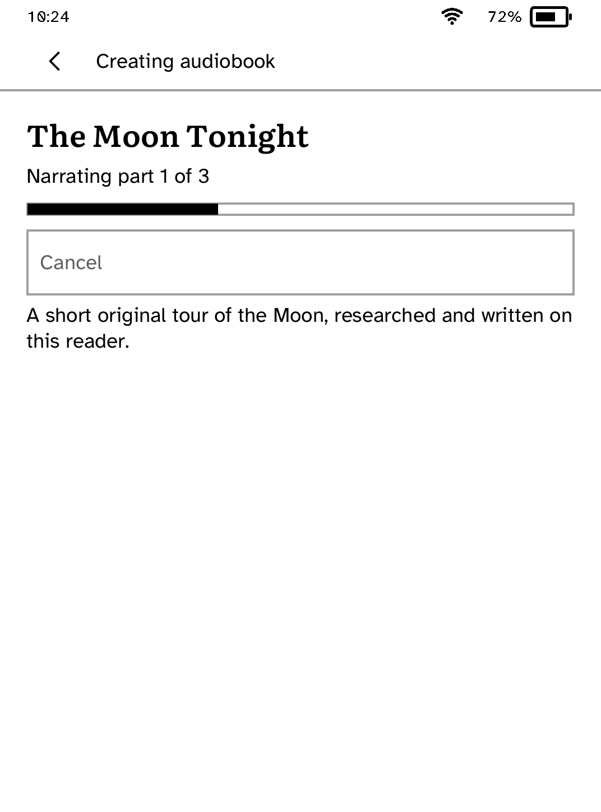
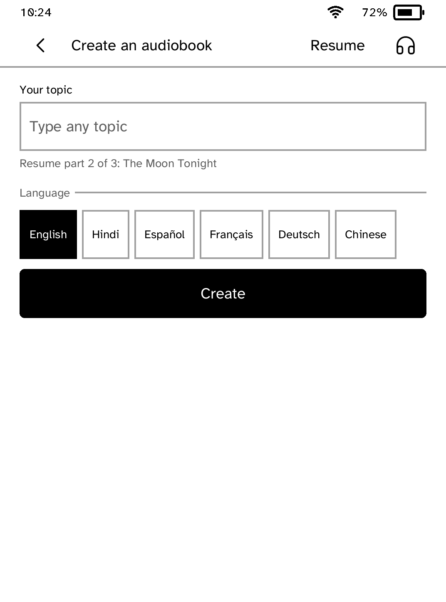

Audio
Audiobooks
Play the audiobooks on your Kobo, with chapters, speed, a sleep timer and your place kept. Or make one from a topic.
- Version
- 2.0.2
- Permissions
- network, audio, bluetooth-audio, bluetooth-control
- Requires
- Cobalt 0.3.34



New in 2.0.2
A file that will not play says what to do about it, and the library fits its page while a book is playing.
App setup
Before you install
- Set up the reader once over USB, if you have not already.
kobo setup - Plug the reader in, open its storage and copy audiobooks into a folder called Audiobooks: an .m4b, .m4a, .mp3, .ogg, .opus, .flac or .wav file is one book, and a folder of numbered files is one book with a part per file.
- Open Audiobooks, tap a book, and connect headphones or a speaker when asked. Tapping a book later carries on where you left it.
- To make a book from a topic instead, create an API key with Exa, OpenAI and ElevenLabs, save them in ~/.exa, ~/.openai and ~/.elevenlabs, and install each with its command. It shows the time and cost before anything is spent.
kobo secret set exa
Commands need the kobo command on macOS, Linux or Windows WSL. This installs it ready-built, without touching the reader:
curl -fsSL https://bandarlabs.github.io/Cobalt/install.sh | sh -s -- --no-setup
New to Cobalt?
Install Cobalt from your browser
Plug your Kobo into this computer and install Cobalt in about a minute. After that, apps install over Wi-Fi.
Works in Chrome, Edge and Opera. Check your Kobo is supported.
Already have Cobalt?
Link your Kobo to install
On your Kobo, open App Store and tap Link a browser in the top bar, then Link a browser again. Scan the QR code, or enter the pairing code and verification key it shows.
Install on your Kobo
Your Kobo checks the app's signature before installing it.